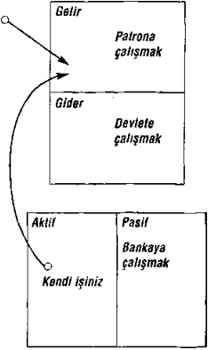

bilançodur. Pasiflere karşı aktiflerin dengesini sağladığı için bu isim verilir. Finans dehalarının çoğu ‘gelir hesabı’ ile ‘bilanço’ arasındaki ilişkiyi bilmez. Bu ilişkiyi anlamak hayatidir.
Finans mücadelesinin temel gerekçesi bir aktifle bir pasif arasındaki bilinmeyen farktır. Karışıklığın nedeni iki sözcüğün tanımındadır. Diğer karmakarışık bir ders istiyorsanız,, sözlükte ‘aktif ve ‘pasif kelimelerine bakın yeter.
Şimdi bu eğitimli muhasebecilere anlamlı gelebilir, oysa sıradan birine Çince yazılmış bir yazıyı versen de fark etmez. Sözcüklerin karşılıklarını okuyabilirsiniz ama kavraması güçtür.
Daha önce de belirttiğim gibi zengin babanın iki küçük çocuğa söylediği şuydu: “Aktifler cebinize para koyar.” Hoş, basit ve yararlı.
Bir Pasifin Nakit Akış Modeli. ’
101
downloaded from KitabYurdu.org
Artık aktifler ve pasifler çizimlerle tanımlandığına göre, açıklamalarım sözcüklere dökülürse anlamak daha kolay ola bilir.
Aktif cebime para koyan bir şeydir.
Pasif cebimden para götüren bir şeydir.
Bilmeniz gereken bu işte. Zengin olmak istiyorsanız, ya - şamınız boyunca aktif satın almaktan başka bir şey yapmayın. Yok, eğer yoksul ya da orta sınıftan olmaksa seçiminiz, pasif olarak vakit harcayın. Gerçek dünyadaki mali sıkıntının büyük nedeni aradaki farkı bilmemekten kaynaklanır.
102
downloaded from KitabYurdu.org
Cehalet, ister sözcükler ister rakamlarla, finansal bocala - manın temelidir. Eğer insanlar maddi sıkıntı içindelerse, ya sözcüklerde ya da rakamlarda okuyamadıkları bir şeyler var demektir. Anlaşılmayan bir şey vardır. Zenginlerin zengin olmasının nedeni insanların maddi olarak boğuştukları konulardan daha farklı alanlarda daha çok bilgi sahibi olmalarıdır. Siz de zengin olmak ve servetinizi korumak istiyorsanız, finans bilgilerini öğreneceksiniz; hem sözcüklerle hem de rakamların dilinde...
Çizimlerdeki oklar ‘nakit akışını simgeler. Rakamların tek başına pek anlamı olmayabilir. Aynı şekilde sözcükler de tek başına yeterli gelmez. Önemli olan öyküsüdür. Mali raporlamada rakamları okumak öykünün ta kendisidir. Nakdin nereye aktığının öyküsüdür. Ailelerin yüzde 80’i için mali geçmiş tablosu, ilerlemek için çok çalışmanın öyküsüdür. Bunun sebebi, para kazanamamaları değil yaşamları boyunca aktif yerine pasif almaya vakit harcamalarıdır.
Örneğin, yoksul birinin ya da henüz yuvadan uçmamış bir gencin nakit akış modeline bakalım:
103
downloaded from KitabYurdu.org
Bu, orta sınıftan bir kişinin nakit akış modelidir
104
downloaded from KitabYurdu.org
İş
Gelir
Maaş
Gider Vergiler İpotek Sabit gider Gıda Giyecek
Eğlence
Aktif
Pasif
İpotek
Tüketici kredisi Kredi kartları
Bu, varlıklı birinin nakit akış modelidir:
105
downloaded from KitabYurdu.org
Gelir
Kâr payları Faiz Kira geliri Hisseler Gider
Aklit
Pasif
Birikimler
Tahvil
Şenel vb. kâğıt Emlak Fikri miilk
Tüm bu çizimler epey basitleştirilmiştir. Herkes yaşamak için gıda, barınma ve giyim harcamaları gibi belli
106
downloaded from KitabYurdu.org
harcamalar yapar.
Çizimler yoksul, orta sınıf veya zengin birinin nakit akışını göstermektedir. Bize öyküyü anlatan nakit akışıdır. Kişinin parayı nasıl ele aldığım, para eline geçtikten sonra ne yaptığını söyler.
Konuyu Amerika’nın en zengin adamlarının öyküsüyle anlatmaya başlamamın nedeni çoğu kişinin düşüncesindeki yanılgıya işaret etmekti. Yanılgı, paranın bütün sorunları çözeceğidir. İşte bu nedenle biri karşıma çıkıp, “Nasıl çabuk zengin olunur?” diye sorduğunda gerilirim. Ya da nereden başlasak diye sorarlar. Sık sık duyarım: “Borcum var, daha çok para kazanmam gerek.”
Fakat daha çok paranın sorunları çözdüğü pek görülmez; tam tersine, sorun daha da çetrefilleşir. Para genellikle biz insanların korkunç kusurlarım açığa çıkarır. Bilmediğimiz konulara ışık tutar. Bundan dolayı, çoğu zaman eline beklenmedik bir para geçen kişi -diyelim miras, maaş zammı ya da lotaryadan vuran ikramiye- kısa sürede tekrar maddi sıkıntıya düşer, bazen de eskiden yaşadığı sıkıntıdan daha beteriyle karşılaşır. Para yalnızca kişinin zihnindeki nakit akışı modelini etkilemiştir. Eğer bu model elinize geçeni harcama eğilimindeyse, gelir artışı gider art ışını doğuracaktır. Şu deyiş bunu pek güzel özetler: “Aptal ve para yan yana gelince büyük bir şenlik olur.”
107
downloaded from KitabYurdu.org
Daha önce de defalarca değindiğim üzere bilgiye ve mes - leğe dayalı beceriler edinmek için okula gideriz; bunlar önemlidir. Mesleki becerilerimiz bize para kazanmayı öğre - tir. 1960’h yıllarda, henüz bir ortaokul öğrencisiyken, okul - da iyi notlar alan parlak bir öğrenciye ileride tıp fakültesine gidip doktor olacak gözüyle bakılırdı. Öyle sanılırdı. Parasal getirisi büyük bir meslekti doktorluk.
Günümüzde doktorların yaşadığı maddi sıkıntıyı en kötü düşmanım için bile dilemem. Birkaçını saymak gerekirse: Sigorta şirketleri muayenehanelerini denetim altına alır; verdikleri hizmet dışarıdan güdümlüdür; devlet müdahale eder; mesleğini kötüye kullandığı gerekçesiyle davalar açılır. Bugün çocuklar basketbol yıldızı, golf dehası, bilgisayar kurdu, sinema yıldızı, pop yıldızı, güzellik kraliçesi ya da borsacı olmak arzusunda. Tek nedeni de şan, şöhret ve para. İşte bu nedenle çocukları daha okuldayken yönlendirmek önemli. Artık çocuklar da mesleki başarının eskiden olduğu gibi salt akademik başarıyla bağlantılı olmadığını biliyorlar.
Öğrenciler okuldan finans becerileri edinmeksizin çıktıkları için milyonlarca eğitimli insan mesleklerinde başarıyla ilerlerken çok geçmeden kendilerini maddi sıkıntılar içinde buluyorlar. Daha çok çalışsalar da durum değişmiyor. Eğitimlerinde eksik kalan konu, nasıl para
108
downloaded from KitabYurdu.org
kazanılacağı değil, paranın nasıl harcanacağı - parayı kazandıktan sonra ne yapmalı? Buna mali yetenek de nir. Para elinize geçtikten sonra binlerinin onu sizden almasını nasıl önlersiniz, paraya ne kadar süreyle elinizde tutarsınız, parayı nasıl sizin için çalıştırırsınız. Çoğu kişi neden maddi sıkıntıya düştüğünü bilmez çünkü nakit akışım anlamaz;. Kişi çok eğitimli, mesleğinde başarılı olsa da mali bilgiden yoksun olabilir. Böyleleri, parayı nasıl kendileri için çalıştıracaklarını öğrenmek yerine, çok çalışmayı öğrendikleri için gereğinden fazla çalışırlar.
Maddi Düşler Peşinde Koşarken Maddi Kâbusa Yakalanmanın Öyküsü
Çalışkan insanların ortaya koyduğu resim kareleri belirli bir şema gösterir. Yeni evli, mutlu ve eğitimli genç çift dara - cık kiralık bir apartman dairesine taşınırlar. Çok sürmez, birlikte en az tek başına oldukları kadar az para harcadıklarından para artırdıklarım fark ederler.
Soran dairenin darlığıdır. Çocuk sahibi olabilmek için düşlerindeki evi satın almak üzere para biriktirmeye karar verirler. Ne de olsa artık çift: gelirlidirler. Böylelikle mesleklerine odaklanırlar.
Gelirleri artmaya başlar.
Gelirleri arttıkça...
109
downloaded from KitabYurdu.org
Giderleri de artar.
110
downloaded from KitabYurdu.org

Çoğu kimse için bir numaralı gider kalemi vergilerdir. Bunun gelir vergisi olduğunu düşünenler çoktur, oysa Amerikalıların çoğu için en yüksek vergi sosyal sigortaya ödenen primdir. Çalışan birinin ödediği sosyal sigorta primiyle sağlık hizmetlerine giden para kabaca yüzde 7.5 diye bilinmektedir fakat aslında bu oran yüzde 15 olarak gerçekleşmektedir, çünkü işveren sosyal sigortalara bu oranı tamamlayacak ödemeyi yapar. İşte bu rakam işvere nin işçiye ödeyemediği paradır. Bu da yetmezmiş gibi bir de maaşınızdan kesilen sosyal sigortalar priminin gelir vergisini ödersiniz, aslında bu İliç elinize geçmeyen bir gelirdir, doğrudan sosyal sigortalara gi der.
Ve pasif varlıklar artar.
111
downloaded from KitabYurdu.org
Bunu en iyi biçimde ortaya koymak için yeniden genç çifte dönelim. Gelirlerinin artması sonucunda düşlerindeki evi almak üzere karar alırlar. Kendi evlerine yerleşir yerleşmez, adına emlak vergisi denen yeni bir vergiyle tanışırlar. Derken yeni bir araba, yeni evlerine göre yeni mobilyalar ve yeni aletler alırlar. Ansızın uyandıklarında ellerindeki pasif sütunu ipotek borcu ve kredi kartları borcuyla dolmuştur.
Fare yarışında tutsaktırlar artık. Bir çocukları doğar. Daha çok çalışırlar. Aynı süreç tekrarlanır. Daha çok parayla daha yüksek vergiye destek kayması da denir. Kredi
112
downloaded from KitabYurdu.org
kartları gelir postayla. Kullanırlar. Borçlar doruğa tırmanır. Kredi şirketlerinden biri arar, en büyük aktifleri olan evlerinin değerini
gördüklerini söyler. Şirket “borçları birleştirme” önerir, çünkü kredi notları yüksektir, ayrıca yapılacak en doğru şeyin kredi kartı borçlarını kapatarak yüksek faizli tüketici kredisi borcunu bitirmek olduğunu belirtir. Bunun yanı sıra, ev kredisindeki faiz vergiden düşülecektir. Kabul ederler, yüksek faizli kredi kartı borçlarını öderler. Biraz rahatlamışlardır. Kredi kartı borçları bitmiştir. Şimdi tüketici kredisi borçlarını evin ipotek borcuna katmışlardır. Borç taksitleri düşmüştür, ne de olsa geri ödemeyi 30 yıl daha uzatmışlardır. Bu akıllıca bir şeydi r.
Komşuları uğrayıp birlikte alışverişe gitmeyi önerir; indirimli satışlar başlamıştır. Tasarruf etme fırsatı doğmuştur. “Hiçbir şey almayacağım. Bir gidip ne var ne yok bakacağım
0 kadar,” diyerek yola düşerler. Ama olur da akla yatan bir şey görürler diye kredi kartlarını da yanlarına alırlar.
Bu genç çiftle sık karşılaşırım. Adları değişir, ancak finansal ikilemleri aynıdır. Diyeceklerimi dinlemek üzere toplantılarıma gelirler. “Nasıl daha fazla para kazanacağımızı anlatabilir misiniz?” diye sorarlar. Harcama alışkanlıkları yüzünden gelirlerini artırma arayışına
113
downloaded from KitabYurdu.org
girmişlerdir.
Asıl sorunun ellerindeki parayı nasıl harcadıklarıyla ilgili okluğunu, maddi darlıklarının gerçek nedenini bilmezler.
Buna yol açan, finans bilgisizliğidir; aktif ve pas if arasındaki farkı anlamamaktır.
Daha fazla paranın kişinin para sorunlarına çözüm olması enderdir. Sorunu çözecek olan zekâdır. Bir arkadaşımın borç iyinde yüzen kişiler için dilinden düşürmediği bir söz vardır:
Eğer kendinize bir çukur açtıysanız, kazmayı bırakın.” Çocukken babam bize Japonların üç gücün farkında ol - duklarını anlatırdı: “Kılıcın gücü, mücevherin gücü ve ayna - nın gücü.”
Kılıç silahların gücünü simgeler. Amerika silahlara mil - yonlarca dolar harcıyor, dünyada süper güç olması bu yüzdendir.
Mücevherin gücü paranın gücüdür. Şu sözde bir nebze gerçek payı var: “Altın kuralı hatırlayın. Altına sahip olan kuralları koyar.”
Ayna kendini tanımanın gücünü simgeler. Kendini tanı - ma, Japon efsanesine göre üçünden en değerlisidir. Yoksullar ve orta sınıf paranın gücünün kendilerini denetim altına almasına göz yumarlar. Yataklarından kalkıp
114
downloaded from KitabYurdu.org
çok çalışmakla, yaptıklarının akla mantığa sığıp sığmadığını kendilerine sormamakla, her sabah işe giderek kendilerini topuklarından vurmuş oluyorlar. Parayı tam olarak anlamayan pek çok kimse paranın korkunç gücüne teslim olur. Paranın gücü onların aleyhine kullanılır.
Eğer aynanın gücünü kullansalardı, kendilerine şunu so - rarlardı: “Bu mantıklı mı?” Çoğu insan içsel melekelerine, içlerindeki dehaya güvenmek yerine sürüye kapılır. Bir şeyi, herkes yaptığı için yaparlar. Sorgulamak yerine onlara ayak uydururlar. Kendilerine söyleneni düşünmeden tekrarlarlar. “Değişiklik yapın”, “eviniz bir aktiftir”, “eviniz en büyük yatırımınız”, “büyük borca girmekle verginizi düşürmüş oluyorsunuz”, “sağlam bir iş bulun”, “hata işlemeyin” ya da “risk almayın” gibi fikirler...
Denildiğinde göre, kimileri için çevrenin dırdırı ölümden daha korkutucudur. Psikiyatrlar, çevre korkusunun kayna - ğının toplum dışına itilme, dışlanma, eleştirilme, alaya alın - ma, yoksun kalma korkusu olduğunu söylerler. Farklı olma korkusu insanları sorunlarım çözmek için yeni yollar ara - maktan alıkoyan
İşte bu toplum dışına itilme korkusu, insanları başkalarına ayak uydurmaya, toplumda kabul gören fikirle ri ya da popüler eğilimleri sorgulamaksızın benimsemeye iter: “Eviniz bir aktiftir”, “borç birleştirme kredisi alın borçtan
115
downloaded from KitabYurdu.org
kurtulun”, “çok çalışın”, “bu bir terfi”, “bir gün şirketin başkan yardımcısı ben olacağım”, “para biriktirin”, “zam aldığımda, kendimize daha büyük bir ev alalım”, “şirket hisseleri sağlamdır”,
“Gıdıkla Beni Elmo bebeklerinden stoklarımızda kalmadı ama arkada bir tane var, bir müşteri ayırtmıştı, daha gelme - Büyük mali sıkıntıların çoğu sürüye kapılıp gitmekten ve Bay ve Bayan Komşu ile aşık atmaya çalışmaktan
kaynaklanır. Bazen gereken aynaya bakmak,
korkularımızdan çok iç melekelerimize dürüst olmaktır. Mike ve ben on altı yaşımıza geldiğimizde, okulda sorunlar yaşamaya başlamıştık. Kötü çocuklar değildik. Yalnızca sürüden ayrılmaya başlıyorduk. Okuldan sonra ve hafta sonları Mike’ın babasının yanında çalışıyorduk. İşten sonra Mike’la birlikte onun babasının yanında saatlerce oturur, bankacılarla, avukatlarla, muhasebecilerle, borsa simsarlarıyla, yatırımcılarla, müdürler ve çalışanlarla yaptığı toplantıları dinlerdik. Karşımızda on üç yaşında okulu terk etmiş bir adam vardı; şimdi eğitimli insanları çekip çeviriyor, onlara emirler veriyor, talimatlar yağdırıyor, sorular soruyordu. Bir işaretiyle soluğu karşısında alır, ondan onay görmediklerinde ezilip büzülürlerdi.
İşte sürüye kapılmamış bir adam vardı karşımızda. Kendi
116
downloaded from KitabYurdu.org
adına düşünen bu adam şu sözlerden nefret ederdi: “Bu işin başka yolu yok, herkes öyle yapıyor.” Ayrıca, “yapamam” demekten hiç hoşlanmazdı; ondan bir şey istiyorsanız, “yapabileceğinizi sanmam” demeniz yeterli.
Mike’la ben onun toplantılarına katılmakla üniversite da - hil okul sıralarından öğrendiğimizden çok daha fazla şey öğ - rendik, Mike’ın babası okulda öğrenim görmemişti ama kendini finans konusunda eğitmiş, başarılı da olmuştu. Bize durmadan, “Zeki bir insan kendinden daha zeki adamlar işe alır,” derdi. Saatlerce onu dinleyebilmek gibi bir şansımız vardı, böylelikle zeki insanlardan çok şey öğrenmiş oluyorduk.
Ancak aynı nedenle, Mike da ben de okulda öğretmenleri - mizin istediği standart dogmalara ayak uyduramıyord uk. İşte sorunların kaynağı buydu. Öğretmen ne zaman sınıfa dönüp “İyi notlar almazsanız, gerçek dünyada başarılı olamazsınız,” dese, Mike da ben de kaşımızı kaldırırdık. Kurallara bağlı kalmamız onlardan sapmamamız söylendiğinde, okul sürecinin aslında kişilerin yaratıcılığını körelttiğini anlayabiliyorduk. Zengin babamızın “Okullar işveren yerine iyi işçiler yetiştirmek üzere tasarlandı,” demesinin nedenini görüyorduk.
Bazen de Mike’la öğretmenlerimize okuduklarımızı nasıl hayata geçireceğimizi ya da neden para ve paranın
117
downloaded from KitabYurdu.org
nasıl işlediği konusunda ders görmediğimizi sorardık. Sorunun ikinci kısmına aldığımız yanıt, paranın önemli olmadığı, eğer iyi eğitim alırsak paranın da kendiliğinden geleceği olurdu.
Paranın gücüyle ilgili daha çok şey öğrendikçe öğretmenlerimizden ve sınıf arkadaşlarımızdan daha da uzaklaştık.
Yüksek öğrenimli babam asla notlarımla ilgili baskı yap - mıyordu. Neden diye merak ederdim. Fakat para konusun da tartışmaya başlamıştık. On altı yaşıma geldiğimde, paray la ilgili almış olduğum temel herhalde annemle babamınki den daha fazlaydı. Muhasebe defteri tutmasını biliyordum, vergi hesabı yapan muhasebecileri, şirket avukatlarını, ban kerleri, emlak komisyoncularını, yatırımcıları ve benzerlerini rahatlıkla dinlerdim. Babamsa öğretmenlerle konuşmakla yetinirdi.
Bir gün babam, evimizin onun en büyük yatırımı oldu - ğundan söz ediyordu. Ona evin neden iyi bir yatırım olma - dığını kanıtlamaya kalktığımda aramızda hiç de hoş olmayan bir tartışma geçti.
Aşağıdaki çizim ev sahibi olmak konusunda zengin ba - bamla yoksul babam arasındaki algılama farkını ortaya koy - makta. Biri evinin aktif olduğunu ileri sürerken, diğeri evin bir pasif olduğunu savunurdu.
118
downloaded from KitabYurdu.org
Zengin Baba
Yoksul Baba
Nakit akışının yününü kendisine göstermek üzere aşağı - daki çizimi babamın önüne koyduğumu hatırlıyorum. Ev sa - hibi olmakla birlikte gelen ek giderlere de işaret etmiştim. Daha büyük ev daha büyük gider demektir, nakit akışı da gider sütunundan çıkar.
Pasif
119
downloaded from KitabYurdu.org

Bugün evin aktif varlık olmadığını söylediğim insanlar hâlâ bana meydan okurlar. Ayrıca, çoğu kimseye göre ev sahibi olmanın, büyük bir düş olduğu kadar, büyük bir yatı - rım olduğunu da biliyorum. Ev sahibi olmak hiçbir şeye sa - hip olmamaktan daha iyi diye görülmekte. Bu popüler dog - maya değişik bir bakış açısı önermekle yetiniyorum. Eğer karımla ben daha büyük, daha süslü bir ev alacak olsaydık, bunu aktif bir varlık olmadığının bilincinde olarak yapardık, o ev cebimizden para götüreceği için pasif bir varlık olacak - tır.
Savunduğum görüş şu: Ne var ki pek çok insanın bunu kabul etmesini beklemiyorum, çünkü güzel bir ev duygusal
120
downloaded from KitabYurdu.org
bir yerdir. Paraya gelince, derin duygular finansal anlayışın zayıflamasına hizmet eder. Kişisel deneyimlerimden biliyo - rum ki, para ne yapar ne eder alınan her kararı duygusal te - mde dayandırmanın bir yolunu bulur.
1. Konu ev olunca, binlerce insanın asla sahibi olamadık ları bir eve yaşamları boyunca ödeme yaptıklarına işa ret ederim. Başka bir deyişle, her birkaç yılda bir yeni bir ev alan pek çok kimse, bir öncekinin otuz yıllık bor cunu öder.
2. İpotek borcundan doğan faiz ödemelerini vergiden dü - şebilmelerine rağmen öteki harcamalarını vergiden son ra kalan parayla yaparlar. İpoteklerini ödeseler bile...
3. Emlak vergileri: Kayınvalidemle kayınpederim aylık ödemeleri gereken emlak vergisinin 1000 dolara çıktı - ğını öğrendiklerinde afallamışlardı. Bu, emekli olmala - rından sonraydı, dolayısıyla verginin artmasıyla birlikte emekli bütçelerine ek yük binmiş, onlar da evden vaz - geçmek zorunda kalmışlardı.
4. Evlerin değeri ille de artmaz. 1997 yılında hâlâ 1 mil yon dolarlık ev borçları olmasına rağmen evlerini ancak 700 bin dolara satabilecek pek çok kişi tanıyorum.
5. En büyük kayıp da kaçan fırsatlardan gelir. Eğer bütün paranızı bir eve bağlamışsanız, paranız aktif varlık sü - tununa dahil olmak yerine harcama sütunundan taştığı
121
downloaded from KitabYurdu.org
için daha çok çalışmak zorunda kalırsınız, ki bu da kla sik orta sınıf nakit akışı modelidir. Genç bir çift aktif varlık sütununa daha önceden para koyabilmişse, gelecek yıllar onlar için daha kolay geçecektir. Özellikle de çocukları üniversite çağma geldiğinde... Aktifleri katlanacak ve giderlerini karşılayabilmelerini sağlayacaktır. Ama çoğu zaman bir ev dağ gibi büyüyen harcamaları karşılamak için araç olarak kullanılır.
Özetle, daha önceden bir yatırım programı yapmak yeri - ne çok pahalı bir ev sahibi olma kararı veren birey en az tiç yolda etkilenir:
1. Zaman kaybı: Diğer aktif varlıkların değer kazanması nı beklerken.
2. Ek sermaye kaybı: Doğrudan evle ilgili yüksek bakım giderlerini ödemek yerine yatırıma dönüştürülebilecek para.
3. Eğitim kaybı: İnsanların çoğu aktif sütunlarındaki yegâ - ne kalemler olan evlerine, tasarruf ve emeklilik ikrami - yelerine güvenirler. Yatırım yapacak paraları olmadığın - dan, yatırım yapmazlar. Bunun bedeli de yatırım dene - yimi eksikliğidir. Yatırım dünyasının ‘akıllı yatırımcı’ diye tanımladığı kimselerden asla olamazlar. En iyi yatı - rımlar genelde ‘akıllı yatırımcılar’ tarafından satın alınır, sonra da onlar tarafından sağlamcı kimselere satılır.
122
downloaded from KitabYurdu.org
Eğitimli babamın bireysel hesap özeti, fare yarışındaki birinin yaşantına en güzel örnektir. Harcamaları her zaman geliriyle doğru orantılıdır, aktiflere yatırım yapmasına olanak vermez. Sonuçta, ipotek ve kredi kartı borçları gibi pasifleri aktiflerinden daha büyüktür. Aşağıdaki çizim binlerce sözcükten daha değerlidir:
Zengin babamın bireysel hesap özetiyse yatırıma ve pasif varlıkları en az sayıda tutmaya adanmış bir yaşamın sonuçlarını yansıtmaktadır:
Zengin babamın hesap özeti zenginlerin neden daha zen - ginleştiğini gözler önüne sermektedir. Aktif sütunu giderleri karşılamak için yeterli olandan daha çok gelir ürettiği gibi
123
downloaded from KitabYurdu.org
aktif sütununa ekleme yapılmasına olanak verir. Aktif sütunu büyüdükçe ürettiği gelir de onunla birlikte artar. Zengin
Babanın Hesap Özeti
Gelir Gider Aktif Pasif
Sonuçta, zenginler zenginleşir!
Orta sınıf kendini maddi sıkıntı kısırdöngüsünde bulur. Başlıca gelirleri maaştır ve maaş artışıyla birlikte ödedikleri vergiler de artar. Maaşları ile harcamaları eşit oranda artar; işte buna “fare yarışı” denir. Gelir getirecek aktiflere yatırım
124
downloaded from KitabYurdu.org
yapmak yerine evlerini başlıca aktif olarak görürler.
Orta Sınıf Neden Didinir? Gelir Gider Aktif Pasif
Eve yatırım gözüyle bakma ve maaş artışını daha büyük bir ev satın almak ya da daha çok harcama yapmak için kay - nak olarak görme anlayışı günümüzün borca dayalı toplumunun temelidir. Gider artışı süreci yüzünden işlerinde daha yüksek basamaklara çıkıp düzenli olarak maaş zammı görseler de, pek çok aile daha büyük borçlar altına girer ve daha çok maddi bilinmezle karşı karşıya kalır. 19901ı yıllardaki toplu işten çıkarmalar-işletmelerin kü - çülmesi- orta sınıfın mali yönden ile kadar kaygan bir zeminde olduğu gerçeğine ışık tutmuştur. Şirketlerde emeklilik ikramiyesi kavramının yerini ansızın 401k* programlan almıştır. Sosyal sigortanın başının dertte olduğu ve emeklilik günleri için çözüm olmadığı apaçık ortada. Orta sınıf paniğe düşmüş durumda. Bunun yanı sıra, bu insanların çoğunun bu
* Çalışanın maaşından emeklilik dönemi için şirketlerce kesilen, Türkiye 'de
125
downloaded from KitabYurdu.org
ki belli kurumların uyguladığı Emekli Sandığı Programı benzeri bir uygulama. (Ç.ıt.)
sorunların farkına varması ve şirket hisseleri almaya başlaması olumlu bir gelişme. Yatırımlardaki bu artış borsaya para hareketlerinin hız kazanması olarak yansımakta. Günümüzde orta sınıfın talebine yanıt olarak, giderek daha çok şirket hisseleri piyasaya sürülmekte. Şirket hisselerinin revaçta olmasının nedeni güvenceli
olmalarından ileri geliyor. Standart şirket hissesi al ıcıları vergilerini, ipotek borçlarım ödemek, çocuklarının gelecekteki üniversite masrafları için para biriktirmek ve kredi kartı harcamalarını karşılamaktan başlarını kaldıramazlar. Yatırım yapmayı öğrenecek zamanlan yoktur, bu yüzden hisse yöneticisinin önerilerine güvenmek zorundadırlar. Öte yandan, şirket hisseleri arasında pek çok farklı yatırını türü bulunduğundan, bu çeşitlilik sayesinde paralarının emin ellerde olduğuna inanırlar.
Eğitimli orta sınıfa giren bu grup, fon aracıları ve fi nans uzmanlarının ortaya koyduğu çeşitlilik dogmasına sarılırlar: Sağlam oynayın. Riskten kaçının.
Ortalama orta sınıftan insanların karşılaştığı riski yaratan asıl trajedi erken yaşta finans eğitimi almamış olmaktır. Sağlam adım atmak zorundadırlar, çünkü mali d urumları kısıtlıdır. Bilançoları dengede değildir. Gelir getirecek
126
downloaded from KitabYurdu.org
gerçek aktifler yerine pasiflere sahiptirler. Tek gelir kaynakları maaşlarıdır. Yaşamları işverenlerine bağlıdır. Böylece, gerçek anlamıyla ‘ömür boyu anlaşmalar’
gündeme geldiğinde, fırsatları değerlendiremezler.
Sağlamcı olmalıdırlar, çünkü çok çalışmakta, yüksek oranlarda vergi ödemekte ve borç içinde yüzmektedirler. Bu bölümün başında da değindiğim gibi en önemli kural aktifle pasif arasındaki farkı bilmektir. Bu fark anlaşıldıktan sonra tüm dikkatinizi gelir getiren aktifler almaya verin. Zengin olma yolunda atılacak ilk adım budur. Bunu yerine getirirseniz aktif sütununuz büyüyecektir. Pasiflerinizi ve giderlerinizi düşük tutmaya dikkat edin. Böylece aktif sütununa sürekli para akıtma şansınız olacak. Çok geçmeden aktif temeliniz öyle derinleşir ki daha spekülatif yatırımlara yönelme olanağı doğar. Bunlar geri dönüşü yüzde 100’den sonsuza kadar olabilecek yatırımlar, 5000 doların 1 milyon dolar getiri doğurabileceği yatırımlar, orta sınıfın ‘çok riskli’ diye tanımladığı yatırımlardır. Yatırım riskli değildir. Kişinin ‘yüksek risk’ göze almasına yol açan,
finans bilgisizliği sonucunda mali zekâsının
gelişmemesidir.
Eğer sürüye kapılırsanız, karşınıza çıkacak aşağıdaki tablodu r.
127
downloaded from KitabYurdu.org
Gelir İşverene çalışmak
Gider Devlete çalışmak
Akli!
Pasit Bankaya çalışmak
Ev sahibi bir çalışansanız, genellikle şöyle bir çaba içinde sinizdir:
1. Biri için çalışırsınız. Maaş karşılığı çalışanların çoğu patronu ya da hissedarı zenginleştirir. Çabalarınız ve başarınız patronun başarısına ve emekliliğine katkıda bulunur.
2. Devlet için çalışırsınız. Devlet payını siz daha maaşınızı görmeden alır. Daha çok çalışmakla devletin aldığı ver gi miktarını artırmış olursunuz - devlet memurlarının çoğu Ocak’tan Mayıs’a kadar salt devlete kazandırmak için çalışırlar.
128
downloaded from KitabYurdu.org
3. Banka için çalışırsınız. Vergilerden sonra en büyük gideriniz kesinti ve kredi kartı borcunuzdur.
Daha çok çalışmanın yarattığı sorun, bıı üç aşamadan her birinin artan çabalarınızdan kendi payına düşeni almasıdır. Öğrenmeniz gereken, artan çabalarınızın doğrudan sizin ve ailenizin yararına nasıl dönüştürüleceğidir.
Kendi işinize odaklanmaya karar verdikten sonra amacınızı nasıl belirlersiniz? Çoğu kimse mesleklerini sürdürmek ve gelir getiren aktif mallar edinmek için maaşına güvenmek zo runda.
Aktifleri büyürken başarılarının boyutunu nasıl ölçerler? Kişi zengin olduğunu, servete sahip olduğunu nasıl fark eder? Aktif ve pasiflerin tanımından başka servetin tanımlanması da önemli. Ben bu tanımlamaları Bu ckminster Fuller adında bir adamdan ödünç aldım. Kimi ona şarlatan gözüyle bakar, kimi de ayaklı kütüphane. Yıllar önce, 1961’de adına jeodezik kubbe denen üçgen kalıplardan kurulu bir bina tarzı için patent başvurusunda bulunduğunda bütün mimarlar hop oturup hop kalkmıştı. Ama sıra uygulamaya geldiğinde Fullerim servet üstüne söyleyeceği bir şeyler de vardı. Söyledikleri önce epey karmaşık görünse de iyice okuduktan sonra anlam ifade etmeye başladı: Servet, kişinin ileride yaşayacağı onca gün boyunca ayakta kalabilme yeteneği ya da bugün çalışmayı bıraktığında
129
downloaded from KitabYurdu.org
ayakta kalabilme gücüdür.
Net değerin -kişinin gelir getiren mal varlıklarıyla pahalı ıvır zıvır ve eşyalarının tahmini değeri arasındaki fark- tersi - ne bu tanım doğru bir ölçüm geliştirme olanağı tanır. Şimdi mali açıdan bağımsızlığa erişme amacımın hangi aşamasında olduğumu ölçüp doğru dürüst bilebiliyordum. Net değer, ardiyenizde duran satın almış olduğunuz, öte - beri gibi nakit getirmeyen aktifleri ifade ederken, servet paranızın ne kadar para getirdiğini, dolayısıyla mali dayanıklılığınızı ifade eder.
Servet, harcama sütunuyla aktif sütununun
karşılaştırılmasından nakit akışının ölçümüdür.
Bir örnek verelim: Diyelim ki, aktif sütunundan ayda 1000 dolarlık nakit akışım var. Aylık giderim da 2 bin dolar. Servetim ne kadar?
Buckminster Huller’ın tanımlamasına dönelim. Onun ta - nımıyla daha kaç günlük parasal gücüm var? Varsayalım ki otuz çeken bir aydayız. Demek ki yarım ay boyunca yetecek nakit akışım var.
Eğer mal varlıklarımdan gelen nakit akışı ayda 2 bin doları bulursa, o zaman zenginim demektir.
Öyleyse henüz zengin değilim, ama varlıklıyım. Her ay aylık harcamalarımı tamamen karşılayan aktif varlıklarımın ürettiği gelirim var. Harcamalarımı artırmak istersem, önce
130
downloaded from KitabYurdu.org
bu servet düzeyini korumak için mal varlıklarımdan gelen nakdi artırmanı gerek. Unutmayın ki bu aşamada artık maaşıma bağımlı biri değilim. Bana maddi bağımsızlığımı sağlayan aktif sütunumu inşa etmede başarılıyım. Bugün işimden ayrılsam bile, aktiflerimden gelen net gelirle aylık harcamalarımı karşılayabilirim.
Bundan sonraki hedefim aktiflerimden gelen nakit akışı fazlasını yeniden aktif sütunuma aktarmak. Aktif sütunuma ne kadar çok para girerse, o kadar büyür. Aktiflerim ne kadar büyürse, nakit akışım, net gelirim o kadar artar. Giderlerimi
aktiflerimden gelen nakit akışından daha az tuttuğum sürece, daha da zenginleşeceğim, fiziksel çabamdan gelen kaynaklardan başka gelire sahip olacağım.
Bu yeniden yatırım süreci sürdükçe zengin olma yolunda emin adımlarla ilerlerim. Zenginin gerçek tanımı bakış açısına göre değişir. Hiçbir zaman fazla zengin olunmaz. Şu basit gözlemi aklınızdan çıkarmayın:
Zenginler aktifleri satın alır.
Yoksulların yalnızca giderleri vardır.
Orta sınıf aktifliğine inandığı pasifler alır.
Peki kendi işimi kurmaya nasıl girişirim? Çözüm nedir? McDonald’s zincirlerinin kurucusuna kulak verin.
131
downloaded from KitabYurdu.org
DERS III
Kendi İşinize B akın
1974 yılında McDonald’s kurucusu Ray Kroc’a, Aus - tin’deki Teksas Üniversitesi İşletme Bölümü doktora sınıfında konuşma yapması teklif edilmişti. Değe rli arkadaşlarımdan biri, Keitli Cunningham o sınıfta öğrenciydi. "Etkileyici ve güçlü konuşmanın ardından öğrenciler Ray’e, okuldan sonra gittikleri birahanede kendileriyle birlikte birkaç bira içip iç meyeceğini sormuşlar. Ray sevinerek kabul etmiş.
Herkes birasını aldıktan sonra Ray onlara, “Ben ne içindeyim?” diye sormuş.
“Hepimiz güldük,” diye anlatmıştı Keitli. “MBA
132
downloaded from KitabYurdu.org
öğrencilerinin çoğu Ray’in dalga geçtiğini düşünmüştü.” Kimseden ses soluk çıkmayınca Ray sorusunu bir daha
yöneltmiş: “Ne işinde olduğumu düşünüyorsunuz?” Öğrenciler yine gülmüşler, sonunda gözü pek biri çıkıp bağırmış: “Ray, dünyada senin hamburger piyasasında olduğunu bilmeyen mi var?”
Ray kıkırdamış. “Böyle diyeceğinizi biliyordum.” Bir an duraksadıktan sonra şöyle demiş: “Bayanlar ve baylar, ben hamburger işinde filan değilim. Ben emlak içindeyim.” Keith, daha sonra Ray’in kendi bakış açısını anlatmak için epey zaman harcadığını anlatmıştı. İşi planlarken Ray, temel hedefin hamburger satış yetkisi satmak olduğun un farkındaymış, ancak zincirin her bir halkasının bulunduğu yerin önemini asla göz ardı etmemiş. Her bir yetkili satış noktasının başarısında en önemli etkenin emlak ile onun yeri olduğunu hiç aklından çıkarmamış. Temel olarak, satış zincirinin bir halkasını satın alan kişi, aynı zamanda Ray Kroc’un organizasyonu içinde yerin mülkünü de satın almış. Bugün, McDonald’s dünyada tek başına en büyük mülk sahibi kuruluş, mal varlığı Katolik Kilisesi’nden bile fazla. McDonald’s Amerika’da olduğu kadar dünyanın öteki ülke - lerinde de en değerli kavşaklara ve köşebaşlarına sahip. Keitli ömründe aldığı en önemli derslerden biri olduğun - dan söz etmişti. Bugün Keitli’in araba yıkama şirketleri var,
133
downloaded from KitabYurdu.org
ama yıkama şirketlerini işletirken aslında emlakçılı k yapıyor.
Bundan önceki bölümün sonunda yer alan çizimler çoğu kimsenin kendisinden başka herkes için çalıştığını ortaya koymaktaydı. Önce şirket sahipleri için, sonra ödedikleri vergiler nedeniyle devlet için ve son olarak da ipoteği tutan banka için çalışırlar.
Küçük bir çocukken oturduğumuz mahallenin yakınlarında McDonald’s yoktu. Ancak zengin babam Ray Kroc’un Teksas Üniversitesi’nde verdiği dersi Mike’la bana vermeyi üstlenmişti. Bu zenginlerin 3 No’lu sırrıdır.
Sır şu: “Kendi işinize bakın.” Maddi sıkıntı çoğu kez ya - şamları boyunca başkası için çalışan insanların başına g elir. Çoğu, çalıştığı onca işgününün sonunda hiçbir şey elde et - mez.
Bir daha söyleyeyim, bir çizim binlerce sözcükten daha değerlidir. İşte Ray Kroc’un öğüdünü en iyi ortaya koyan bir gelir hesabı ve bilanço grafiği:
Mesleğiniz
134
downloaded from KitabYurdu.org

Eğitim sistemimiz bugünün gençlerini bilgiye dayalı be - cerilerini geliştirerek kendilerine iyi işler bulmaya odaklıyor. Yaşamları maaşlarının ya da daha önce tanımlandığı gibi, gelir sütunlarının çevresinde dönecek. Bilgiye dayalı becerilerini geliştirdikten sonra mesleki yeteneklerini ilerletmek üzere öğrenimin basamaklarında ilerlerler. Mühendis, bilim adamı, aşçı, polis memuru, sanatçı, yazar vb. olmak için okurlar. Bu mesleki beceriler onların işgücüne katılmalarına ve para için çalışmalarına olanak sağlar.
135
downloaded from KitabYurdu.org
Mesleğinizle işiniz arasında büyük bir ayrım vardır. Her - kese şunu sorarım: “Ne iş yapıyorsunuz?” Onlar da, “Oh, ben bankerim,” derler. Ben de bankanın sahibi olup olma - dıklarını sorarım. Genelde şu yanın alırım: “Hayır, orada ça - lışıyorum.”
Meslekleriyle işlerini birbirine karıştırmışlardır. Meslekleri bankerlik olabilir, fakat yine de kendi işlerine sahip olmaları gerek. Ray Kroc mesleğiyle işi arasındaki fark konusunda netti. Mesleği hiç değişmedi. Obir satıcıy dı. Bir dönem milkshake mikserleri sattı, daha sonra hamburger yetkili satış mağazaları. Ancak, mesleği hamburger satış mağazaları pazarlamak iken, işi gelir getiren mülk biriktirmekti.
Okulla ilgili sorunlardan biri, neyin eğitimini almışsanız o işi yapmanızdır. Eğer yemek pişirme okuluna giderseniz aşçıbaşı olursunuz. Hukuk okursanız avukat, otomobil me - kaniği tahsili görürseniz tamirci olursunuz. Eğitim gördüğü dalda çalışma yanılgısı, insanların kendi işlerine bakmayı unutmalarıdır. Yaşamlarını başkasının işinde çalışarak ve o kişiyi zengin ederek harcarlar.
Mali açıdan güvende olmak için insan kendi işine bakmalıdır. Gelir sütununuzun tersine, işiniz aktif sütununuzun çevresinde döner. Daha önce de belirtildiği gibi, birinci kural aktif ve pasif arasındaki farkı bilmek ve
136
downloaded from KitabYurdu.org
aktif varlıklardan edinmektir. Herkes gelir hesaplarına önem verirken, zenginler dikkatlerini aktif sütunlarına verirler.
Bu yüzden şu lafları çok sık duyarız: “Zamma ihtiyacım var.” “Ah, bir terfi etseydim.” “Daha iyi bir iş bulmak için yeniden okula gidiyorum.” “Fazla mesai yapmam gerek.” “Belki ikinci bir iş bulurum.” “İki haftaya kadar işi bırakıyo - rum. Daha yüksek ücretli bir iş buldum.”
Kimi çevrelerde bu fikirler revaçtadır. Ancak Ray Kroc’a kulak verecek olursanız, hâlâ kendi işinize bakmıyorsunuz demektir. Bu fikirler hâlâ gelir sütunuyla ilgilidir ve kişi ancak ek parasını gelir getiren mal varlığı edinmede kullanırsa, maddi güvence sağlar.
Yoksul ve orta sınıfın çoğunluğunun parasal yönden tutucu olmasının, diğer bir deyişle, “Riski göze alamam,” demelerinin başlıca nedeni, finansal temele sahip olmamalarıdır. İşlerine bağlı kalmak zorundadırlar. Sağlam adımlar atmalıdırlar.
Küçülme revaçta olduğunda milyonlarca çalışan, sözde en büyük mal varlıkları olan evlerinin onları canlı canlı yediğini anladı. Ev denen aktifleri her ay onlara yüktü. Bir diğer ‘aktif olan araba, onları yiyip bitiriyordu. 1000 dolar ödedikleri garajda duran golf sopaları artık 1000 dolar
etmiyordu. İş güvencesi olmaksızın dayanaktan
137
downloaded from KitabYurdu.org
yoksundular. Aktif diye gördükleri hiçbir şey onları mali kriz döneminde destekleye miyordu.
Sanırım çoğumuz bir bankaya gidip ev ya da otomobil kredisi başvurusunda bulunmuşuzdur. ‘Net değer’, başka deyişle ‘öz sermaye’ bölümüne bakmak her zaman ilginçtir. İlginç olmasının nedeni bankacılık ve muhasebecilik uygulamalarına göre kişilerin neleri aktif diye görebileceklerini aydınlığa kavuşturmasıdır.
Kredi başvurusunda bulunduğum bir dönemde maddi durumum yeterli gelmemişti. Ben de aktif sütunumu şişir - mek için golf sopalarımı, resim koleksiyonumu, kitaplarımı, stereo müzik setimi, televizyonumu, Armani marka takım elbiselerimi, kol saatlerimi, ayakkabılarımı ve başka kişisel eşyalarımı mallarımın arasına yazmıştım.
Ancak başvurum geri çevrilmişti, çünkü fazlasıyla gayri - menkul yatırımım vardı. Apartman dairelerinden bu kadar çok para kazanmış olmam kredi kurulunun hoşuna gitme - mişti. Neden maaş aldığım normal bir işim olmadığını sor - muşlardı. Armani elbiselerimi, golf sopalarımı ya da sanat koleksiyonumu merak eden olmadı. ‘Standart’ kimlik özelliklerinin dışında kaldığınızda yaşam acımasız olabilir. Ne zaman biri bana net değerinin 1 milyon ya da 100 bin
-ya da her ne kadarsa- dolar ettiğini söylese tedirgin olurum.
138
downloaded from KitabYurdu.org
Bunun en büyük nedenlerinden biri net değerin gerçeği yan - sıtmamasıdır, çünkü mal varlığınızı satmaya başladığınızda elde ettiğiniz kazançtan vergi alınır.
Bundan dolayı, geliri düşen kimseler kendilerini ağır bir maddi sıkıntıya sokar. Nakit sıkıntısından kurtulmak için aktiflerini satarlar. İşe kişisel mallarını satmakla başlarlar, ancak karşılığında aldıkları para kişisel bilançolarında yazanın altındadır. Ama eğer kârlı çıkarlarsa, o zaman da vergisini öderler. Demek ki, devlet kazançtan payını alır, bu da onları borçtan kurtaracak miktarı azaltır. İşte bu yüzden kişinin net değeri sandığından ‘düşük değerde’ olabilir. Kendi işinize bakmaya başlayın. Tam gün çalıştığınız işe devam edin, ama bir yandan da eve getirdiğinizde gerçek değerinden kaybeden pasifler ya da elbise vb. kişisel eşyalardan uzak durup gerçek aktifler satın almaya bakın. Yeni bir araba, direksiyonuna oturup yola düştüğünüz anda ödediğiniz bedelin yüzde 25’ini kaybeder. Bankacınız arabanızın bir numaralı mal varlığınız olduğunu söylese bile, araba doğru bir aktif değildir. 400 dolarlık y eni titanyum golf sopam ilk golf topunu vurduğum anda 150 dolara eşitlendi.
Yetişkinlerin yapması gereken, harcamalarım düşük tut - mak, pasiflerini en aza indirgemek ve kararlılıkla sağlam bir aktif temeli oluşturmak. Henüz yuvadan uçmamış gençlerin
139
downloaded from KitabYurdu.org
ana-babaları onlara aktifle pasif arasındaki farkı öğretmeli. Evden ayrılmadan, evlenmeden, bir ev satın almadan, çocuk sahibi olup riskli bir finansal pozisyonda hırpalanmadan, bir işe sarılıp her şeyi krediyle satın almadan önce sağlam bir aktif temeli kurmaya başlamalılar.
Pek çok kimse çocuğu evden ayrılmak üzereyken kendi emekliliği için yeterince hazırlık yapmadığını fark eder ve kenara bir miktar para koymak için didinmeye başlar. Derken kendi anne ve babaları hastalanınca yeni sorumluluklarla karşı karşıya kaldıklarını görürler. Öyleyse, size ya da çocuklarınıza ne tür aktif varlıklar edinmenizi öneriyorum? Benim dünyamda gerçek aktifler yedi farklı kategoriye girer:
1. Fiziksel varlığımı gerektirmeyen işyerleri. Onların işve - reniyim, ama işyerlerini başkaları yönetiyor ya da işletiyor. Eğer ben de orada çalışsam, orası benim işyerim olmaktan çıkar. İşim olur.
2.Hisse senetleri.
3. Tahviller.
4.Şirket hisseleri.
5.Gelir getiren gayrimenkul.
6.Bonolar (Borç senetleri)
7. Müzik, yazılı eser, patent gibi düşünceye dayalı eşya - lardan telifler.
140
downloaded from KitabYurdu.org
8. Değeri olan, gelir üreten ya da pazarı hazır olup değer artıran başka ne varsa.
Küçük bir çocukken eğitimli babam bana sağlam bir iş bulmamı öğütlerdi. Zengin babamsa sevdiğim mal varlıkları edinmemi. “Sevmeyecek olursan, ilgilenmezsin de.” Benim gayrimenkul satın almamın nedeni bina ve arazileri sevme indir. Onlar için alışverişe çıkmaya bayılıyorum. Bütün günümü bu uğurda harcayabilirim. Sorunlar çıksa bile gayrimenkul sevgimi silecek kadar kötü olmuyor. Gayrimenkulden hoşlanmayanlar onları satın almamalı. Küçük şirketlerin hisselerini almak hoşuma gider; özellikle de yeni piyasaya sürülenleri... Bunun nedeni benim şirket adamı değil de girişimci olmamdır. İlk yıllarda büyük kuramlarda çalışmıştım; Califbrnia’daki Standart Oil’de, ABD Deniz Piyadegücü’nde ve Xerox Şirketi’nde. O şirketlerde güzel günlerim geçti, unutulmaz anılarım var, ancak içimden bir ses bana hep şirkette çalışacak biri olmadığımı söylüyordu. Benim hoşuma giden şirketleri kurmak, onları yönetmek değil. İşte bu yüzden küçük şirketlerin hisse senetlerini alırım, hatta bazen şirketi ben kurar, sonra hisselerini halka açarım. Piyasaya yeni sürülen hisse senetleriyle büyük bir servet kazanılır, işte ben bu oyunu seviyorum. Çoğu kimse küçük şirketlerin hisse senetlerini almaya çekinir ve riskli olarak görür; öyledir. Ne
141
downloaded from KitabYurdu.org
var ki yatırımınızı sever ve anlarsanız, oyunu da bilirseniz, risk azalacaktır. Küçük şirketler için belirlediğim yatırım stratejisi, bir yıl içinde hisselerin tükenmesidir. Bunun yanı sıra, gayrimenkul stratejime göre, küçükle başlayıp mülkleri takas yoluyla giderek büyütmek kazançtan doğacak vergi ödemesini geciktirmektir. Böylece değerin büyük oranlarda artışım sağlarsınız. Bir gayrimenkulu elimde tutma sürem yedi yılın altında kalır.
Yıllar yılı, Deniz Piyadegücü’nde ya da Xerox’tayken bile, zengin babamın öğüdünü tuttum. Tam gün işimde çalışmayı sürdürdüm, ama bir yandan da kendi işime baktım. Aktif sütunum hareketliydi. Gayrimenkul ve küçük hisse senetleri ticareti yaptım. Zengin babam finansal bilginin önemini daima vurgulardı. Muhasebe ve nakit yönetimini daha iyi anladıkça, yatırımları daha iyi analiz edebilecek ve sonunda kendi şirketimi kurup büyüte bilece ktim.
Gerçekten istemedikçe kimseye kendi şirketini kurmasını önermeyeceğim. Bir şirket yönetmekle ilgili bildiklerimi göz önünde bulundurunca, o yükü herkese önermem. Kimi zaman kişiler çalışacak iş bulamadığında kendi işini kurmak en iyi çözümdür. Başarı karşısında eşitsizlik vardır: Kurulan her on şirketten dokuzu beş yılda batar. İlk beş yıl ayakta kalmayı başaran on şirketin dokuzu
142
downloaded from KitabYurdu.org
da sonunda yine çöküp gider. Bundan dolayı ancak kendi şirketinizi kurmaya gerçekten is- tekliyseniz, bu yola gitmenizi öneririm. Aksi takdirde tam gün işinizde çalışmaya devam edin, bir yandan da kendi işinize bakın. Kendi işinize bakın derken, aktif sütununuzu kurup güçlendirmekten söz ediyorum. İçeri giren bir tek doların bile çıkmasına izin vermeyin. İşleme şöyle bakın, aktif sütununuza girdiği anda dolar sizin çalışan elemanın ızdır. Paranın özelliği sizin için 24 saat çalışması ve kuşaklarca bunu sürdürebilmesidir. Tam gün işinizde kalın, çok çalışkan sevilen bir eleman olun ama o aktif sütununu kurmayı ihmal etmeyin.
Nakit akışınız arttıkça birtakım lüks mallar satın alabilirsiniz. Yoksullar ve orta sınıf önce lüksleri satın almaya yönelirken zenginlerin lüksleri en son satın alması önemli bir farktır. Yoksul ve orta sınıfın satın aldığı lüksler büyük evler, elmaslar, kürkler, mücevher ya da teknedir, böylece zengin görünürler. Zengin görünürler, ama gerçekte kredi borçlan giderek büyür. Ezelden beri parası olanlar, uzun vadeli zenginler, önce aktif sütunlarını kurarlar. O sütunun ürettiği gelirle kendi lükslerini satın alırlar. Yoksul ve orta sınıfın edindiği lüksler kendi alın terleriyle, çocuklarına aktaracakları mirastan kırpılan parayla satın alınır.
143
downloaded from KitabYurdu.org
Gerçek lüks yatırım, yapıldığında semeresini veren ve gerçek bir aktif değere sahip olan maldır. Örneğin, karım kiraladığımız apartman dairelerinden gelen paramızla, Mercedes marka bir otomobil aldı. Fazladan çalışmış ya da risk almış olmuyordu, çünkü arabanın parası apartman dairelerinin geliriyle karşılanmış oluyordu. Ne var ki, gayrimenkul yatırımlarının daha da değerlenip arabanın ödemelerini karşılayacak kadar fazladan para getirmesi için dört yıl beklemesi gerekecekti. Öte yandan lüks mal, Mercedes onun için gerçek bir ödüldü, aktif sütununu yükseltmeyi öğrendiğini kanıtlıyordu. Bu araba, karım için, güzel bir arabaya sahip olmaktan fazlasını ifade ediyordu. Ona sahip olabilmek için finans bilgisini kullanabildiğini göstermekteydi.
Pek çok kişi dürtülerine egemen olamayarak, krediyle yeni bir araba ya da başka bir lüks mal alır. Canları sıkılmış, yeni bir oyuncak edinmek istemişlerdir. Krediyle lüks mal alan kimse er ya da geç pişman olur, çünkü o lüks için girdiği borç kısa sürede mali yük olarak karşısına çıkar. Uygun zamanı bekleyip yatırımınızı yaptıktan ve kendi
işinizi kurduktan sonra sihirli dokunuşu yapmaya hazırsınız demektir: Zenginlerin en büyük sırrı işte budur. Zenginleri sürüden alıp götüren sır. Uygun zamanı bekleyip kendi işinize bakmakla gidilen yolun sonundaki ödül.
144
downloaded from KitabYurdu.org
DERS IV Vergilerin Tarihçesi Ve Şirketlerin G ücü
Okulda Robin Hood ve neşeli adamlarının öyküsünü okumuştuk. Öğretmenimiz, zenginlerden alıp yoksullara ve - ren bu kahramanı, Kevin Costner tipinde romantik birini an - latan harika bir öykü olduğunu düşünüyordu.
Robin Hood uzun yıllar önce bu dünyadan göçüp gitmiş olabilir, ne var ki onun izinden gidenler hâlâ yaşıyor. Ne sık duyarım şu sözleri: “Neden zenginler karşılamıyor?” ya da “Zenginler daha çok vergi ödemeli ve yoksullara yardım et - meliler.”
145
downloaded from KitabYurdu.org
Robin Hood’un fikri, diğer bir deyişle zenginlerden alıp yoksullara verme fikri, en çok yoksullara ve orta sı nıfa sıkıntı vermiştir. Orta sınıfın ağır vergi yükü altında olmasının nedeni Robin Hood’un idealidir. Asıl gerçek, zenginlerin vergilendirilmemesidir. Yoksullara yardım eden orta sınıf, özellikle de yüksek gelirli eğitimli orta sınıftır. Bu gelişimin nasıl olduğunu iyice anlamak için önce du - ruma bir kez daha tarihsel açıdan bakmamız gerek. Vergile - rin tarihçesini gözden geçirmeliyiz. Yüksek eğitimli babam eğitim tarihi konusunda, zengin babamsa verginin tarihi ala - nında uzmandı.
Zengin babam Mike’la bana İngiltere ve Amerika’da ön - celeri vergi olmadığım anlatmıştı. Savaş dönemlerinde artan giderleri karşılamak üzere geçici vergiler konurdu. Kral ya da devlet başkanı duyuruyu yapar ve herkesin “elini cebine atmasını” isterdi. İngiltere’de vergi uygulamasına geçilmesi, 1799’dan 1816 yılına kadar, Napolyon’a karşı yapılan savaş dönemine rastlar; Amerika’daysa ilk vergiler 1861-1865 arasındaki İç Savaş döneminde konmuştur. 1874 yılında, İngiltere yurttaşlarından gelir vergisi almayı daimi bir uygulamaya çevirdi. Amerika Birleşik Devletleri ise 16. Anayasa değişikliğinin kabul edilmesinden sonra, 1913 yılında gelir vergisi uygulamasını kalıcı hale getirdi. Bir zamanlar Amerikalılar vergiye
146
downloaded from KitabYurdu.org
karşıydılar. Bağımsızlık Savaşı’nı ateşlemeye katkısı olan, Boston Limanı’ndaki ünlü Çay Partisi’nin nedeni, çaya getirilen aşırı vergi oranları olmuştu. Gerek İn giltere’de gerekse Amerika Birleşik Devletleri’nde düzenli ge lir vergisi uygulamasını benimsetmek elli yıl sürmüştü. Yukarıdaki tarihlerin ortaya koymadığı gerçek, bu vergilerin yalnızca zenginlerden tahsil edilmek üzere konmamış olmasıdır. Zengin babanın Mike ve benim iyi bellememizi istediği nokta da buydu. Yoksul ve orta sınıfa, vergilerin sadece zenginleri cezalandırmak için konduğu anlatılmış, böylece vergi fikri popüler kılınmış ve çoğunluğa kabul ettirilmişti. Dolayısıyla kitleler yasaya Evet oyu vermişler ve vergi anayasal olarak yasallaşmıştı. Asıl amaç zenginleri cezalandırmak olsa da, gerçekte cezalandırılan ona oy veren insanlar, yoksul ve orta sınıf olmuştu.
“Devlet paranın tadını bir kez aldı, iştahı açıldı,” demişti zengin baba. “Senin baban ve ben tamamen karşıtız. O dev - let bürokratı bense bir kapitalistim. İkimiz de kazanırız, ama başarımız karşıt davranışlarla ölçülür. Onun hizmet ettiği devletin gözünde kurum ne kadar büyükse, gördüğü saygı da o kadar büyük olur. Oysa benim kuruluşumda, ne kadar az eleman çalıştırır ve ne kadar az harcama yaparsam, yatırımcılarını beni o ölçüde el üstünde tutar. Devlet
147
downloaded from KitabYurdu.org
memurlarını bu nedenle sevmem. Hedefleri
işadamlarınkinden farklıdır. Devlet büyüdükçe onu destekleyecek vergi oranları da artar.”
Eğitimli babam devletin halka yardım etmesi gerektiğine içtenlikle inanırdı. John F. Kennedy’yi ve Barış Gücü’nü desteklerdi. Bu fikri öyle benimsemişlerdi ki annemle ikisi eğitim gönüllüleri olarak Malezya, Tayland ve Filipinler’e gitmek üzere Barış Gücü’ne katılmışlardı. Gerek Eğitim Bakanlığındaki işinde, gerekse Barış Gücü’nde, babam daha çok kişiyi işe alabilmek amacıyla her zaman bütçe artışı mücadelesi vermişti.
Aşağı yukacı on yaşımdan beri, zengin babamdan, devlet memurlarının' tembel hırsızlar olduğunu, yoksul babamdan ise zenginlerin daha çok vergi vermek zorunda bırakılması gereken açgözlü dolandırıcılar olduğunu duyardım. İkisinin de haklı gerekçeleri vardı. Hem kasabanın en büyük kapita - listlerinden biri için çalışıp hem de devlette önemli bir mev - kide bulunan babamın evinde yaşamak zordu. Kime inanacağıma karar vermek kolay değildi.
Vergilerin tarihçesini incelediğimizde ilginç bir bakış açısıyla karşı karşıya kalırız. Yukarıda belirttiğim üzere vergi sisteminin hayata geçirilmesi kitlelerin, gelirin zenginden alınıp herkese dağıtılması gerektiğini savunan Robin Hood kaynaklı ekonomi teorilerine inanmasıyla
148
downloaded from KitabYurdu.org
mümkün olmuştu. Ancak devlet paraya öyle açtı ki, çok geçmeden orta sınıfa da vergi kondu, oradan da toplumun en alt kademesine dek ya yıldı.
Zenginler bu durumu bir fırsat olarak gördüler. Çünkü onlar oyunu başka kurallarla oynarlar. Daha yelkenli gemiler zamanında palazlanan anonim şirketleri tanımaktaydılar. Her yolculukta taşınan malların riskini azaltmak amacıyla anonim şirketleri kurmuşlardı. Zenginler yolculuk masraflarını karşılamak için şirkete para yatırdılar. Şirketse hazine aramak üzere Yeni Dünya’ya yelken açacak denizcileri işealırdı. Yolculuk sırasında gemi batsa, mürettebat can verse bile, zenginlerin kaybı yalnızca o yolculuğa yatırdıkları parayla sınırlıdır. Aşağıdaki çizimde şirket yapısının sizin bireysel gelir hesabınız ve bilançonuzdan ne kadar farklı olduğunu göreceksiniz.
149
downloaded from KitabYurdu.org
İşte zenginleri yoksullar ve orta sınıfa kıyasla daha üstün kılan, şirketin yasal yapısının gücünü bilmektir. Biri sosyalist, öteki kapitalist iki babamdan öğrendiklerimle kapitalist felsefe bana daha anlanalı gelmeye başlamıştı. Sosyalistlerin finans bilgisizliğinden ötürü ken dilerini cezalandırdıklarım düşünüyordum. Kitleler ‘zenginden al’ görüşünü ne kadar savunurlarsa savunsunlar, zenginler er ya da geç onları alt etmenin bir yolunu buluyordu. Sonunda orta sınıfın da vergiye tabi tutulmasının nedeni buydu. Okullarda öğretilmeyen bir konu olmasına rağmen, paranın gücünü bilmeleri sayesinde zenginler aydınları mat
150
downloaded from KitabYurdu.org